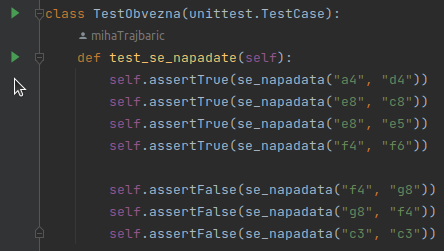

Topovske bitke
Contents
1. Topovske bitke#
1.1. Nekaj dejstev o šahu#
![]()
Šahovska polja označimo s kombinacijo črke (stolpec) in številke (vrstica). c2 je tretje polje v drugi vrstici.
V šahu se trdnjava (AKA top) pomika po stolpcih in vrsticah, ne pa diagonalno ali kako drugače. Dve trdnjavi se torej napadata, če ste v isti vrstici in stolpcu.
Šahovske trdnjave lahko, tako kot šahovski konji, tudi preskakujejo figure. O tem dejstvu sicer nisem povsem prepričan, ampak Donald je tako napisal na Twitterju, torej mora biti res.
Običajno se v šahu napadajo bele in črne figure (tidve barvi bodo sicer nekoč zamenjali s čim nevtralnim, saj se to, da je beli lovec požrl črnega kmeta, sliši rasistično). V naši nalogi pa se bodo med seboj napadale kar bele trdnjave.
1.2. Predloga#
Da bo reševanje šlo kar najbolj gladko, si najprej prenesi topovske_bitke.py (predloga za reševanje) in testi.py, ki vsebuje teste za avtomatsko testiranje.
Če želiš, da testi delujejo, morata biti datoteki shranjeni v isti mapi, druga zraven druge.
Datoteki odpri v svojem najljubšem IDE-ju.
Topovske_bitke.py vsebuje že napisano ogrodje funkcij, ki jih moraš zgolj dopolniti, da bodo računale in vračale prave vrednosti (zamenjaj besedo pass s svojo kodo).
Ko želiš preveriti pravilnost rešitve, poženi datoteko testi.py, ki bo preverila tvojo rešitev. V večini IDE-jev lahko tudi poženeš posamezne teste. V pyvharmu to narediš s klikom na zelen trikotnik ob določenem testu:

1.3. Resitve#
1.4. Naloge#
Napiši naslednje funkcije.
Poskusite pri posameznih podnalogah uporabiti čim več že napisanih funkcij iz prejšnjih podnalog.
1.4.1. se_napadata#
se_napadata(top1, top2) prejme koordinati dveh topov in vrne True, če se med seboj napadata (torej: če sta v isti vrstici ali stolpcu) in False, če se ne. Če gre za eno in isto trdnjavo, pa vedno vrne False.
Tako klica se_napadata("a5", "a8") in se_napadata("c5", "f5") vrneta True, klic se_napadata("a5", "c3") vrne False (ker nista ne v isti vrstici ne v istem stolpcu), klic se_napadata("c3", "c3") pa vrne False, ker gre za eno in isto trdnjavo.
1.4.2. napadeni#
napadeni(top, topovi) prejme koordinato enega topa in seznam koordinat vseh topov na šahovnici. Vrniti mora seznam koordinat vseh topov, ki jih napada podani top.
Klic napadeni("c3", ["c1", "c3", "d6", "c6", "e5", "a3"]) vrne ["c1", "c6", "a3"]. Klic napadeni("c1", ["c1", "c3", "c4", "c5"]) vrne ["c3", "c4", "c5"], ker topovi lahko preskakujejo druge topove.
(Napadeni topovi naj bodo našteti v enakem vrstnem redu, v katerem se pojavijo v seznamu topovi. S tem se ti ni treba posebej ukvarjati: če ne boš kaj brez potrebe mešal(a), se bo zgodilo samo od sebe.)
1.4.3. napadenost#
napadenost(top, topovi) prejme koordinato topa in koordinate vseh topov ter vrne število topov, ki napadajo podani top. Napadenost topa f5 na sliki je 3, saj ga napadajo trije topovi (vključno s topom a5, ker lahko le-ta preskoči top c5).
1.4.4. varen#
varen(top, topovi) vrne True, če podani top ni napaden in False, če je. Na sliki je le en top, za katerega bi ta funkcija vrnila True: top d3.
1.4.5. Varni#
varni(topovi) vrne seznam varnih topov. Na sliki je varen le top d3, zato bo funkcija pri kongiguraciji, kot na sliki, vrnila samo tega.
1.4.6. Najbolj napaden#
najbolj_napaden(topovi) prejme seznam topov in vrne koordinati topa, ki ga napada največ drugih topov. Če je enako napadenih več, vrne tistega, ki je prej na seznamu. Če ni napaden nihče, vrne None.
Za topove na sliki ta funkcija vrne "c5", saj ga napadajo štirje drugi topovi.
1.4.7. vse_varno#
vse_varno(topovi) vrne True, če noben top ne napada nobenega drugega. Na sliki ni vse varno. Nikakor.
1.5. Dodatna naloga#
Donald je priznal napako. No, v resnici je ni, fake news, ampak vseeno: topovi se ne morejo preskakovati.
Napiši funkcijo direkten_napad(top1, top2, topovi), ki prejme koordinati dveh topov in seznam vseh topov. Funkcija vrne True, če se top1 in top2 napadata - seveda tako, da med njima ni nobenega drugega topa.
Funkcija, ki smo jo napisali prej, bi za topa a5 in f5 vrnila True, četudi je med njima top na c5. Funkcija, ki jo pišemo zdaj, pa mora v takem primeru vrniti False.